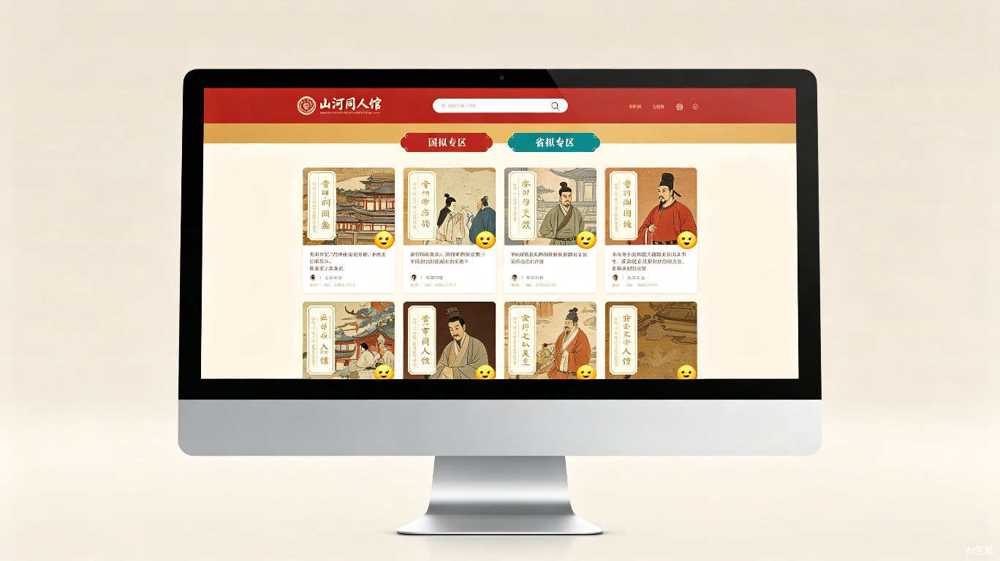
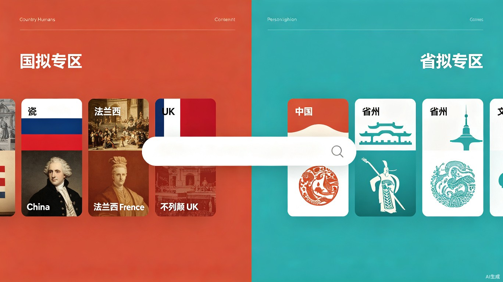

一个国拟与省拟并行的原创同人创作平台，让历史文化以拟人化的方式被看见、被讨论、被热爱。
平台采用双圈独立分站架构：国拟专区以「瓷」「法兰西」「不列颠」等国家拟人化人物为载体，呈现中国及世界各国的真实历史文化；省拟专区以纯原创省份人设为核心，展示中国各省的人文风情。两大圈子共用一套导航与功能框架，内容完全分区隔离，通过顶部搜索框实现跨圈跳转。

以原创国家拟人角色为窗口，呈现中国及世界各国的真实历史文化。每个国家都有专属拟人名（如中国叫「瓷」、法国叫「法兰西」），点击人物卡片即可进入图文历史详情页，在沉浸式的拟人叙事中学习史实。
顶部搜索框是核心跳转入口。输入「国拟 / CH」自动跳转国拟专区，「省拟」跳转省拟专区，输入「CP / 历史 / 周边」等关键词则精准定位到对应板块。两大圈子内容完全隔离，杜绝素材、人设交叉侵权。
用户可自主创建国拟或省拟角色的 AI 智能体，自定义人设台词、性格、背景故事与对话风格。支持在线实时聊天、剧情对话、多轮互动与存档，所有智能体均为原创人设，禁止复刻外网成品。

Country Humans（简称 CH 圈）是一个全球范围内活跃的同人创作圈层，创作者们把国家拟人化，赋予不同国家独特的人物性格、外貌和故事线。国内的省拟圈子也类似，把中国各省画成拟人角色，每个省都有自己的「人设」。
我观察到，这些圈子里的创作热情非常高，但内容散落在各大社交平台上——B 站、微博、Lofter、小红书……创作者没有一个属于自己的、能同时承载图文、视频、小说、周边交易和社交互动的垂直社区。而更让我在意的是，大量优质的历史科普内容被埋藏在娱乐向的二创里，没有发挥它应有的教育价值。
所以我想做一个平台，既能服务 CH 圈和省拟圈的核心创作需求，又能让「以拟人学历史」这件事变得自然且有体系。
在和圈内创作者、学生用户的交流中，我反复听到以下几个痛点：
在决定做「山河同人馆」之前，我考虑过几个可能的方向：做一个纯历史科普平台、做一个泛二次元社区、或者做一个类似猫箱的 AI 角色对话产品。最终选择了「拟人化垂直社区」这个交叉地带，原因有三层判断：
第一，拟人化是一个被低估的教育载体。国家拟人化让抽象的历史变得有温度——「瓷」经历过的朝代更迭，「法兰西」见证过的革命浪潮，比教科书上的时间线更容易让人记住。这不是魔改历史，而是给真实历史穿上了一件更容易亲近的外衣。平台的历史向板块严格审核，确保所有内容有据可查。
第二，双圈隔离是合规与社区健康的基石。国拟（CH 圈）和省拟虽然都是拟人化创作，但受众、人设体系、内容调性完全不同。硬塞在一起会导致推荐混乱、人设串味。我选择让两个圈子共用功能框架但内容完全隔离，从架构层面杜绝跨圈素材侵权，同时也让各自的社区氛围更纯粹。
第三，「创作 + 学习 + 交易 + AI」的四位一体闭环是这个方向最大的结构性优势。传统内容平台只做分发，但拟人化圈子的用户同时是创作者、学习者、消费者和角色扮演者。一个国拟爱好者可能上午发历史科普图文、下午在智能体板块和「瓷」聊天、晚上在周边区淘一个原创立牌——这种多角色切换在垂直社区里是自然发生的，在泛平台里则会被割裂。山河同人馆的设计就是围绕这个闭环来做的。